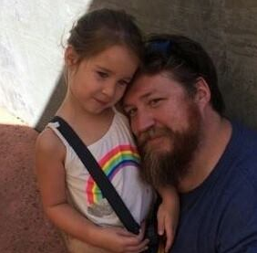

Headquartered in Rancho Cordova, CA, Live Editions, Inc. is a technology company dedicated to the higher education industry.
Live Editions, Inc. has developed a holistic solution to help colleges increase their ability to guide more students through the system and improve post-secondary student outcomes by a hosted SaaS architecture called Pathways. The company was incorporated in 2011 and is based in Rancho Cordova, California.
The TeamThe Live Editions team is a unifying team of highly gifted computer scientists, cognitive scientists and business professionals whose mission is to improve the quality of education, so that each and every person has the chance to realize their full potential and enjoy a better life. With decades of combined experience, this group of technology leaders and visionaries know how to solve complex problems and is committed to making our institutional partners successful every day, while ensuring they have the technology and resources for whatever lies ahead.
Meet the Founders
Eric Kmiec
Founder
Eric is a seasoned Silicon Valley entrepreneur with over three decades of experience in bringing to the global marketplace state-of-the-art wireless telecommunications technologies, e-Publishing, network communications and e-Learning technology. Eric has been pushing the boundaries of technology for more than 30 years, focused exclusively on creating next generation telecom/Internet architectures and technologies, which have translated into several innovative products and solutions, including the introduction of GSM digital cellular to the United States, which enabled the first digital cellular mobile call in the USA to become a reality.
Eric is a veteran of the United States Air Force where he studied electrical engineering, space systems operations and space communications systems engineering. As Chief Executive Officer, Eric manages the company’s day to day operations and leads the overall product vision and business strategy.

Scott Getchel
Co-Founder
Prior to joining Live Editions, Scott served as the Director of Information Technology for several national medical certification boards
After 10 years in the US Air Force, Scott decided to pursue his Ph.D in Organizational Psychology. For his dissertation, he needed some custom software so he taught himself how to code. This opened up the world of software development and data sciences. Leaving the Ph.D program he started working in the Silicon Valley, cutting his teeth at Cisco in San Jose. He left to join several small startups and rode the roller coaster through funding loss and acquisition, living the Silicon Valley life
Scott specializes in Social Network Analysis, but he has experience in Natural Language Processing as well as Supervised Machine Learning Algorithms. He has done contract work for companies like Coca-Cola, Johnson and Johnson and Dartmouth College in this field.